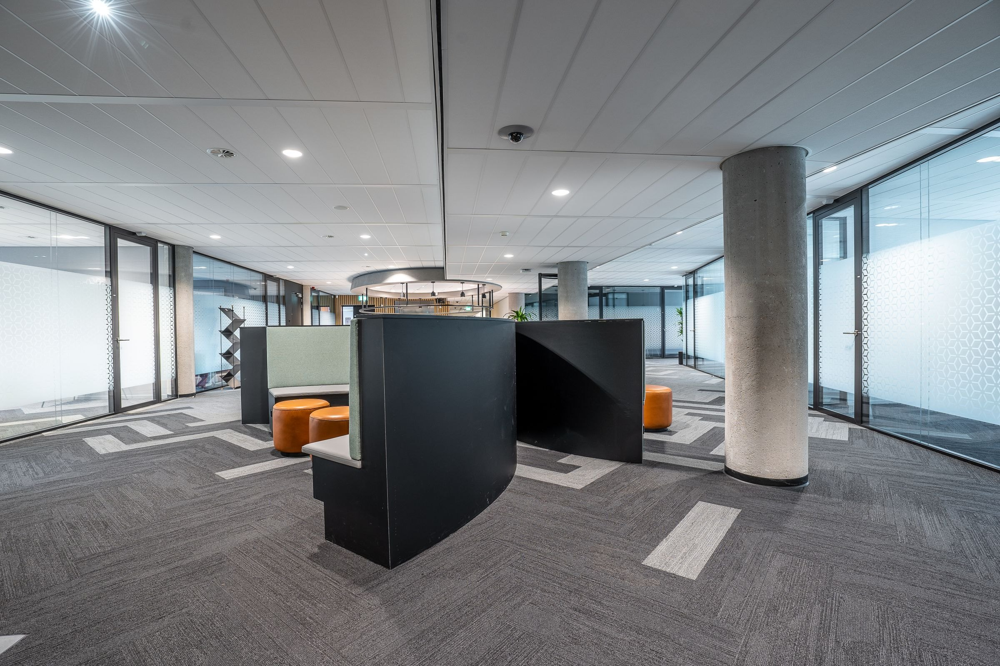

Services
Practical systems. Refined presence.
Websites, automation, and marketing built around how Okanagan operators actually win work, stay visible, and get paid.
A good site is the front door. What happens after someone walks through it is what usually costs you the week: slow replies, quiet quotes, missed reminders, and marketing that waits on spare evenings.
We design the door and the quiet systems behind it. Connected to the tools you already use. Light enough that you can stay on the work. Serious enough that clients, owners, and prospects trust what they see.
Real estate, property management, professional services, and trades each move differently. The pieces below are the same craft, shaped to how your job actually runs.
The core
What we put in place.
Three pieces that work together, so the site isn’t a brochure and the follow-up isn’t another spreadsheet.
-
Website design
Clean, credible pages that explain what you do, where you work, and how to reach you. Mobile-first, inquiry-ready, and wired to your CRM or calendar when it helps.
-
Automation
Lead response, quote follow-up, appointment reminders, invoice nudges, and routing, so the process keeps moving when you’re with a client, on a showing, or out of the office.
-
Ongoing care
A simple plan to keep the site current, the automations watched, and the small fixes handled before they become a fire.
Automation in practice
The jobs that eat your week.
No generic AI pitch. Just the workflows that should never wait on you: first response, open estimates, booked appointments, and getting paid.
We map one real job the way you run it today, then put the missing pieces in place. Fast reply with the right questions. Follow-up that doesn’t die in silence. Reminders that actually land. Invoices that follow the work.
-
Lead response
Answer fast, ask the right questions, route serious prospects with context attached.
-
Quote follow-up
Timed touchpoints on open estimates so good jobs don’t go cold.
-
Appointments & AR
Reminders that cut no-shows and overdue invoices without the chase.
Marketing & content
Stay visible while you do the work.
Presence that doesn’t wait on spare evenings. Social, search, visuals, and marketing handled so promotion keeps moving.
-
Social & SEO content
Consistent posts and search-ready pages that keep your name in front of the right people, without you living in the apps.
-
Visuals on demand
On-brand images for listings, ads, and posts, ready when a campaign, vacancy, or job needs them.
-
Marketing, handled
A done-for-you layer so promotion doesn’t compete with closings, tenants, clients, or the job site.
How we work
Listen. Design. Connect. Steady.
We start with one real path from first contact to paid. Then we design the site and systems around how you actually operate, connect them to what’s already in place, and keep things current after launch.
You don’t get a six-month software project. You get a clear front door, quieter follow-up, and marketing that doesn’t depend on memory.

Not sure where to start?
We’ll map one real job end to end.
A free audit. Clear priorities. No hard pitch.